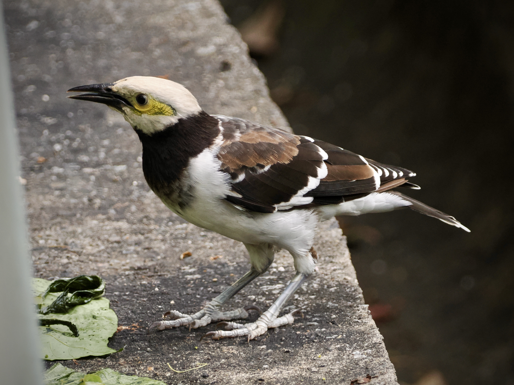
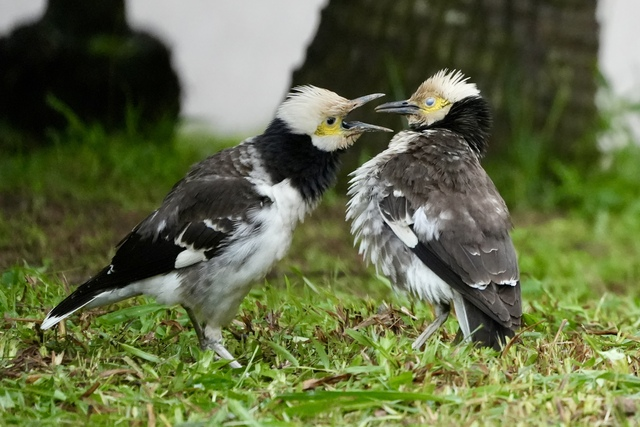
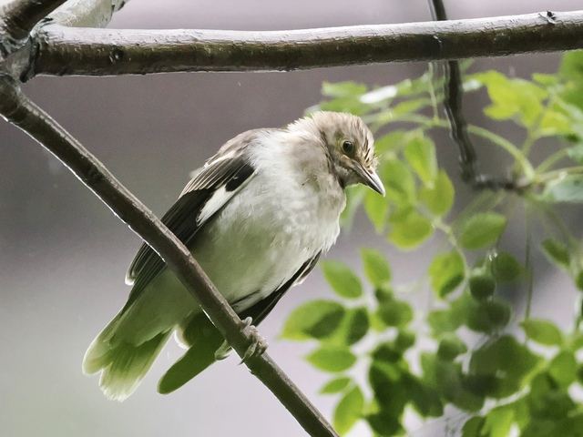

Black-collared Starling
Gracupica nigricollis
Order: Passeriformes
Family: Sturnidae

A loud, white and brown starling with a distinctive black collar. Common in urban areas.

I mean, sometimes you just need to bear with each other.

Juvenile is duller, lacks a black collar and yellow skin around eyes.